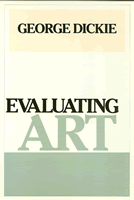

A theory about how to judge a work of art—as opposed to a theory that explains why a particular work is defined as art
A theory about how to judge a work of art—as opposed to a theory that explains why a particular work is defined as art


 A theory about how to judge a work of art—as opposed to a theory that explains why a particular work is defined as art
A theory about how to judge a work of art—as opposed to a theory that explains why a particular work is defined as art

|  |
Evaluating ArtGeorge Dickiepaper EAN: 978-0-87722-683-3 (ISBN: 0-87722-683-0) |
"Those who think they know George Dickie’s views should be sure to read this book. They are in for some interesting surprises. Of course, those unfamiliar with Dickie’s views will also learn a lot."
—Anita Silvers, San Francisco State University
In this book George Dickie presents a theory about how to judge a work of art—as opposed to a theory that explains why a particular work is defined as art. Focusing mainly on the writings of Monroe Beardsley and critically examining the views of seven other philosophers and art critics—Paul Ziff, Frank Sibley, Nelson Goodman, Nicholas Wolterstorff, David Hume, Bruce Vermazen, and J. O. Urmson—Dickie synthesizes their insights to discover what can be derived from their theories. On this basis, he attempts to work out a theory of art evaluation—the first such book on this topic by a contemporary philosopher.
Initially, the author outlines all possible theories of art evaluation, assuming that traditional evaluative notions are used. He identifies seven theory-types that fall under four general headings: imitation value theory, objective intrinsic value theories, subjective intrinsic value theory, and instrumental value theories. Dickie then discusses the historical development of the theory of art evaluation, examining the ways in which eighteenth- and nineteenth-century philosophers treated representation and other cognitive dimensions of art as artistic values. His thorough analysis of the work of other contemporary theorists argues for a theory of art evaluation derived from various strands of thought.
George Dickie, a Professor of Philosophy at the University of Illinois-Chicago, is the author of The Art Circle.
© 2015 Temple University. All Rights Reserved. This page: http://www.temple.edu/tempress/titles/625_reg.html.